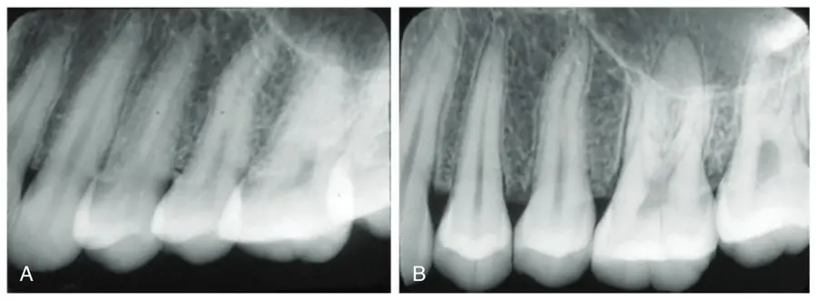

نسخه استخراجشده؛ ترجمه یا تأیید علمی انجام نشده است. وضعیت: captured
قدم 1 · theory
جمعبندی یونیت: جدولها و نکتههای کلیدی
بلوک ۱ — بایتوینگ در یک نگاه
ویژگی یکتا: تاجهای هر دو فک و کرست آلوئولار روی یک گیرنده.
هندسه: پرتو از میان کانتکتها و موازی صفحهی اکلوزال، گیرنده موازی سطوح باکال و لینگوال و عمود بر پرتو.
سه هدف: پوسیدگی پروگزیمال زودهنگام، پوسیدگی ثانویه زیر ترمیم، استخوان بیندندانی و فورکا.
شمار: دو نما در هر کوادرانت (پرمولر و مولر)، کودکان ۱۲ سال یا کوچکتر: یک گیرندهی شمارهی ۲.
ناحیه: پرمولر ← نیمهی دیستال کانینها، با کانین مندیبل بهعنوان راهنما، مولر ← ۱ تا ۲ میلیمتر فراتر از دورترین مولر رویشیافته.
عمودی: اندیکاسیون تحلیل استخوان آلوئولار متوسط تا شدید؛ بقیهی اصول همان افقی.
حاشیه: فیلم و فسفرپلیت ~۲ میلیمتر، سنسور جامد ۲ تا ۴ میلیمتر فضای مرده.
تب در برابر نگهدارنده: با تب، راهنمای بیرونی نیست ← وضعیت سر بیمار مهم میشود.
بلوک ۲ — اکلوزال در یک نگاه
گیرنده: ۷٫۷ در ۵٫۸ سانتیمتر (۳ در ۲٫۳ اینچ)، تنها فیلم یا فسفرپلیت — CCD/CMOS در این اندازه ساخته نمیشود، سمت تیوب به سمت فک مورد بررسی.

خطای زاویهی افقی و همپوشانی حاصل (White & Pharoah. Oral Radiology, 9th ed. — Fig. 6.36)
و جدول زاویهها:
پروجکشن
زاویهی عمودی
نقطهی ورود
قدامی ماگزیلا
+۴۵ (افقی ۰)
نوک بینی
توپوگرافیک ماگزیلا
+۶۵ (افقی ۰)
پل بینی، زیر نازیون
جانبی ماگزیلا
+۶۰
۲ سانتیمتر زیر کانتوس جانبی
قدامی مندیبل
−۱۰ (و −۵۵ نسبت به گیرنده)
خط وسط، نوک چانه
توپوگرافیک مندیبل
زاویهی قائم بر گیرنده
خط وسط، ۳ سانتیمتر زیر چانه
و دو نکتهی وضعیت بیمار: در قدامی مندیبل، صفحهی اکلوزال ۴۵ درجه بالاتر از افق، در توپوگرافیک مندیبل، خط آلا-تراگوس تقریباً عمود بر کف.
و مهمترین نکتهی عملی: در توپوگرافیک مندیبل برای سنگ بزاقی، زمان اکسپوز نصف میشود.
بلوک ۳ — موقعیتهای خاص
گگ: محرک دورسوم خلفی زبان و کام نرم، بلع عمیق پیش از باز کردن، هرگز از زبان حرف نزن، ورود موازی اکلوزال و چرخش قاطع، نه لغزاندن، تنفس سریع بینی، صبح بهتر، بیحسی موضعی نتایج محدود.
کودکان: حساسیت پرتویی بیشتر، بایتوینگ لازم نیست اگر کانتکتها باز و قابل مشاهده باشند، سروی پریاپیکال در اوایل دندانهای مختلط، گیرندهی کوچکتر، «دوربینی که از دندانها عکس میگیرد».
اندودانتیک: دندان در مرکز، گیرنده دور از آپکس، چرخش افقی ۲۰ درجه: مزیال برای پرمولر ماگزیلا، مزیال یا دیستال برای مولر ماگزیلا، دیستال برای مولر مندیبل، کن گوتاپرکا برای تراکت سینوسی و نقص پریودنتال، رادیوگرافی نهایی = خط پایه.
بارداری: دوز جنین بسیار پایین، هیچ گزارشی از آسیب، ولی احتیاط و اندیکاسیون مشخص، انجامشدنی هر زمان نیاز تشخیصی معقول باشد.
بیدندان: پانورامیک راحتترین، جایگزین ۱۴ نما (۷ در هر فک: ۱ مرکزی + ۲ لترال-کانین + ۲ پرمولر + ۲ مولر)، اکسپوز ۲۵٪ کمتر، رول پنبه و کش ارتودنسی، تکرار بیعلامت موجه نیست.
بلوک ۴ — پنج خطا و اصلاحشان
گیرنده به سمت اکلوزال ← آپکسها گم میشوند ← عمیقتر.
گیرنده بیش از حد قدامی ← مولر سوم ناقص ← خلفیتر یا تغییر روش.
زاویهی عمودی زیاد ← زیگوما روی آپکسها، نبود میز اکلوزال (و کوتاهشدگی) ← کاهش زاویه.
زاویهی افقی نادرست ← همپوشانی مینای پروگزیمال ← پرتو از میان کانتکتها.
همراستایی نادرست ← کونکات ← رینگ راهنما و موازی بودن دو رینگ.
سؤالهای این مرور سختترند و بسیاری یک تصویر معیوب یا یک وضعیت بالینی میدهند و میپرسند کدام کلیشه، کدام زاویه، یا کدام اصلاح.
قدم 2 · question
روی بایتوینگی که گرفتهای، کانتکتها بسته و تاجهای یک فک مایل دیده میشوند. هندسهی درستی که باید برقرار میبود کدام است؟
۰۱
پرتو عمود بر صفحهی اکلوزال و از بالا؛ گیرنده در صفحهی اکلوژن و موازی با آن، با سمت تیوب رو به فک مورد بررسی
۰۲
پرتو از میان فضاهای بیندندانی و موازی با صفحهی اکلوزال؛ گیرنده موازی سطوح باکال و لینگوال و عمود بر پرتو
۰۳
پرتو عمود بر نیمساز زاویهی میان دندان و گیرنده؛ گیرنده در تماس با سطح لینگوال و با زاویه نسبت به محور بلند دندان
۰۴
پرتو با زاویهی مثبت متغیر بر پایهی ناحیه؛ گیرنده عمود بر محور بلند دندانها و با لبهی بیرونزده از سطح اکلوزال
قدم 3 · question
گیرندهی بایتوینگ مولر یک یا دو ............ فراتر از دورترین مولر رویشیافته قرار میگیرد.
حروف را به ترتیب درست لمس کنید
م
م
ت
ی
ر
ی
ل
نوع سؤال: ساخت کلمه · 7 خانه
حروف منبع: م · م · ت · ی · ر · ی · ل
قدم 4 · question
مطبی میخواهد بهجای تبهای ارزان، نگهدارندهی بایتوینگ با رینگ بیرونی بخرد. کدام سه مزیت این هزینه را توجیه میکند؟
۰۱
گیرنده را در دهان تثبیت میکند؛ از خم شدن آن جلوگیری میکند؛ و فاصلهی جسم تا گیرنده را به کمترین میرساند تا بزرگنمایی حذف شود
۰۲
به همراستا کردن پرتو کمک میکند؛ همپوشانی سطوح پروگزیمال را کم میکند؛ و احتمال اکسپوز جزئی گیرنده را میکاهد
۰۳
میدان پرتو را مستطیلی میکند؛ دوز بیمار را کاهش میدهد؛ و نیاز به کولیماتور جداگانه را در دستگاه برطرف میسازد
۰۴
زاویهی عمودی را خودکار تنظیم میکند؛ زمان اکسپوز را متناسب با ناحیه انتخاب میکند؛ و از حرکت بیمار حین اکسپوز جلوگیری مینماید
قدم 5 · question
در شهری که دسترسی به CBCT محدود است، دستیارت میپرسد آیا اکلوزال هنوز به کار میآید. پاسخ درست کدام است؟
۰۱
هیچ اثری نگذاشته و اکلوزال همچنان روش انتخابی همهی اهداف تشخیصی خود است؛ چون CBCT در هیچیک از این کاربردها برتری ندارد
۰۲
بسیاری از اهداف تشخیصیاش اکنون با CBCT انجام میشوند؛ ولی اکلوزال همچنان جایی که دسترسی به CBCT محدود است به کار میرود
۰۳
اکلوزال را بهطور کامل منسوخ کرده و در هیچ شرایطی دیگر توصیه نمیشود؛ و همهی اندیکاسیونهایش به تصویربرداری مقطعی منتقل شدهاند
۰۴
کاربرد اکلوزال را گستردهتر کرده، چون اکنون از آن بهعنوان کلیشهی غربالگری پیش از هر CBCT استفاده میشود تا اندیکاسیون آن تأیید گردد
قدم 6 · question
کدام مجموعه، اهداف رادیوگرافی اکلوزال را درست فهرست میکند؟
۰۱
تنها مکانیابی دندانهای نهفته و اجسام خارجی؛ و بقیهی موارد به تصویربرداری مقطعی نیاز دارند و با اکلوزال قابل ارزیابی نیستند
۰۲
پوسیدگی پروگزیمال و ثانویه؛ استخوان بیندندانی و فورکا؛ التهاب پریاپیکال؛ مورفولوژی ریشه و پالپ؛ اُسئواینتگریشن ایمپلنت؛ تحلیل ریشه؛ و تعیین طول کار اندودانتیک در دندانهای چندریشهای
۰۳
دندانهای مازاد و نروییده و نهفته؛ اجسام خارجی؛ گسترهی بیماری در فک و کام و کف دهان؛ سوچور میدپالاتال؛ سنگ بزاقی؛ خطوط سینوس ماگزیلاری؛ بیماران با تریسموس؛ و شکستگیهای فک
۰۴
تنها ارزیابی بیماران با تریسموس و محدودیت باز شدن دهان؛ و در بیماران با باز شدن طبیعی، اکلوزال هیچ اندیکاسیون دیگری ندارد
قدم 7 · question
برای دیدن کل کام در یک نما، توپوگرافیک ماگزیلا را انتخاب کردهای. انتظار داری چه ساختارهایی در میدانش باشند؟
۰۱
کام، زوائد زیگوماتیک ماگزیلا، جنبههای قدامی-تحتانی آنترومها، کانالهای نازولاکریمال، دندانها از مولر دوم تا مولر دوم، و سپتوم بینی
۰۲
تنها ماگزیلای قدامی، کف قدامی حفرهی بینی، و دندانها از کانین تا کانین؛ که محدودترین میدان در میان پروجکشنهای اکلوزال ماگزیلا به شمار میرود
۰۳
یک کوادرانت از ریج آلوئولار، توبروزیتی، و دندانها از لترال تا مولر سوم سمت مقابل، با سوپرایمپوزیشن زائدهی زیگوماتیک روی ریشههای مولر
۰۴
بافت نرم کف دهان و صفحات لینگوال و باکال مندیبل از مولر دوم تا مولر دوم؛ که وسیعترین میدان در میان همهی پروجکشنهای اکلوزال است
قدم 8 · question
توپوگرافیک مندیبل برای سنگ بزاقی با همان زمان اکسپوز معمول مندیبل گرفته شده و سنگی دیده نمیشود. چرا باید زمان اکسپوز نصف میشد؟
۰۱
چون سنگهای بزاقی دانسیتهی بسیار بالایی دارند و با اکسپوز کامل، پرتو از میان آنها عبور نمیکند و سایهی کاملاً سیاهی در تصویر بر جای میگذارند
۰۲
چون هدف بافت نرم کف دهان است نه استخوان متراکم مندیبل؛ و اکسپوز کامل، سنگ کمکلسیفیه را در سفیدی محو میکند
۰۳
چون در وضعیت نیمهخوابیده فاصلهی منبع تا گیرنده کوتاهتر میشود و برای جبران افزایش شدت پرتو باید زمان اکسپوز به نصف کاهش یابد
۰۴
چون کف دهان ناحیهی پرتوحساسی است و کاهش دوز در آن الزام حفاظتی دارد؛ و این کاهش هیچ ارتباطی با کیفیت تشخیصی تصویر ندارد
قدم 9 · question
اگر همهی اقدامات مدیریت گگ شکست بخورند، چه راهی میماند؟
۰۱
استفاده از گیرندهی اکلوزال بهجای پریاپیکال در همهی نواحی، چون با کام و زبان تماس ندارد
۰۲
تکرار همان روش داخلدهانی در جلسات متعدد تا بیمار بهتدریج عادت کند و رفلکس با تکرار مواجهه کاهش یابد و معاینه ممکن شود
۰۳
صرفنظر کردن کامل از تصویربرداری و تکیه بر معاینهی بالینی تنها؛ چون در این بیماران هیچ روش تصویربرداری قابل انجام نیست
۰۴
معاینهی خارجدهانی، مانند پانورامیک یا نمای جانبی ابلیک فک، پیش از رفتن سراغ بیهوشی عمومی
قدم 10 · question
کدام دو قاعده دربارهی تصویربرداری کودکان درست است؟
۰۱
بهترین راه، کاهش کیلوولتاژ به نصف مقدار بزرگسال است؛ و بایتوینگ در همهی کودکان بالای شش سال بهطور سالانه و صرفنظر از وضعیت کانتکتها لازم است
۰۲
بهترین راه کاهش پرتوگیری، گرفتن کمترین شمار رادیوگرافی لازم است؛ و بایتوینگ لازم نیست وقتی کانتکتها باز و سطوح پروگزیمال بصری قابل بررسی باشند
۰۳
بهترین راه، جایگزینی همهی کلیشههای داخلدهانی با پانورامیک است؛ و بایتوینگ در کودکان بهدلیل دشواری جایگذاری اصلاً توصیه نمیشود
۰۴
بهترین راه، استفاده از گیرندههای بزرگتر برای پوشش بیشتر است؛ و سروی پریاپیکال تنها پس از کامل شدن دندانهای دائمی توصیه میشود
قدم 11 · question
روی پریاپیکال پرمولر اول ماگزیلا، ریشههای باکال و پالاتال روی هم افتادهاند. قاعدهی تغییر زاویه برای کلیشهی دوم در نواحی مختلف چیست؟
۰۱
۱۰ درجه — همیشه دیستال، چون جابهجایی بیشتر از این مقدار سبب میشود دندان مورد نظر از میدان تصویر خارج شود و کلیشه بیفایده گردد
۰۲
۴۵ درجه — همیشه مزیال، صرفنظر از فک و ناحیه، چون این زاویه بیشترین جدایی را در همهی موقعیتهای آناتومیک تضمین میکند و استاندارد جهانی است
۰۳
۲۰ درجه در صفحهی افقی — مزیال برای پرمولر ماگزیلا، مزیال یا دیستال برای مولر ماگزیلا، و دیستال برای مولر مندیبل
۰۴
زاویهی عمودی و نه افقی تغییر میکند، به میزان ۲۰ درجه، چون جدا شدن ریشهها در صفحهی عمودی رخ میدهد نه افقی
قدم 12 · question
روی ریج بیدندان، نگهدارنده مدام در فضای دندانهای ازدسترفته میافتد. اکسپوز را چگونه تنظیم میکنی و نگهدارنده را چگونه ثابت نگه میداری؟
۰۱
اکسپوز تقریباً ۲۵٪ کمتر از ریج دنداندار؛ و رول پنبه میان ریج و نگهدارنده — گاهی با کش ارتودنسی — برای جلوگیری از افتادن نگهدارنده در فضاهای خالی
۰۲
اکسپوز تقریباً ۲۵٪ بیشتر از ریج دنداندار؛ و تثبیت نگهدارنده با فشار مستقیم دست اپراتور در طول اکسپوز، چون هیچ ساختاری برای تکیهگاه وجود ندارد
۰۳
اکسپوز بدون تغییر؛ و استفاده از گیرندهی اکلوزال بهجای پریاپیکال در همهی نواحی، چون نگهدارندههای پریاپیکال در دهان بیدندان قابل استفاده نیستند
۰۴
اکسپوز نصف ریج دنداندار؛ و نگه داشتن گیرنده توسط خود بیمار با انگشت، چون در نبود دندان هیچ روش تثبیت مکانیکی ممکن نیست
قدم 13 · question
دو خطای خانوادهی «زاویهگذاری نادرست» چه نشانههایی میسازند؟
۰۱
زاویهی عمودی زیاد ← زیگوما روی آپکسهای مولر و نبود میز اکلوزال، زاویهی افقی نادرست ← سوپرایمپوزیشن مینا روی سطوح پروگزیمال
۰۲
زاویهی عمودی زیاد ← سوپرایمپوزیشن مینا روی سطوح پروگزیمال، زاویهی افقی نادرست ← زیگوما روی آپکسها و نبود میز اکلوزال در تصویر
۰۳
هر دو خطا به کوتاهشدگی تصویر میانجامند؛ و تفکیکشان تنها با اندازهگیری دقیق طول دندان و مقایسه با طول واقعی آن ممکن است
۰۴
هر دو خطا به از دست رفتن آپکسها میانجامند؛ چون هرگونه انحراف زاویهای، ناحیهی ثبتشده را به سمت تاجها جابهجا میکند
قدم 14 · question
کدام نگاشت پنج خطای رایج به اصلاحشان درست است؟
۰۱
همهی پنج خطا با تهیهی یک ست کامل نگهدارنده برطرف میشوند؛ و تنظیم زاویه یا جایگذاری در رفع هیچکدام نقشی ندارد و تنها ابزار تعیینکننده است
۰۲
آپکسها گم ← افزایش زاویهی عمودی، مولر سوم ناقص ← مخروط بلندتر، زیگوما روی آپکسها ← اصلاح زاویهی افقی، همپوشانی مینا ← کاهش زاویهی عمودی، ناحیهی بدون اکسپوز ← افزایش زمان اکسپوز و کیلوولتاژ
۰۳
آپکسها گم ← عمیقتر، مولر سوم ناقص ← خلفیتر یا تغییر روش، زیگوما روی آپکسها ← کاهش زاویهی عمودی، همپوشانی مینا ← اصلاح زاویهی افقی، ناحیهی بدون اکسپوز ← رینگ راهنما و موازی کردن دو رینگ
۰۴
همهی پنج خطا با کالیبراسیون دوبارهی دستگاه و تنظیم درست پارامترهای اکسپوز برطرف میشوند؛ و تکنیک اپراتور در پیدایش هیچکدام نقشی ندارد